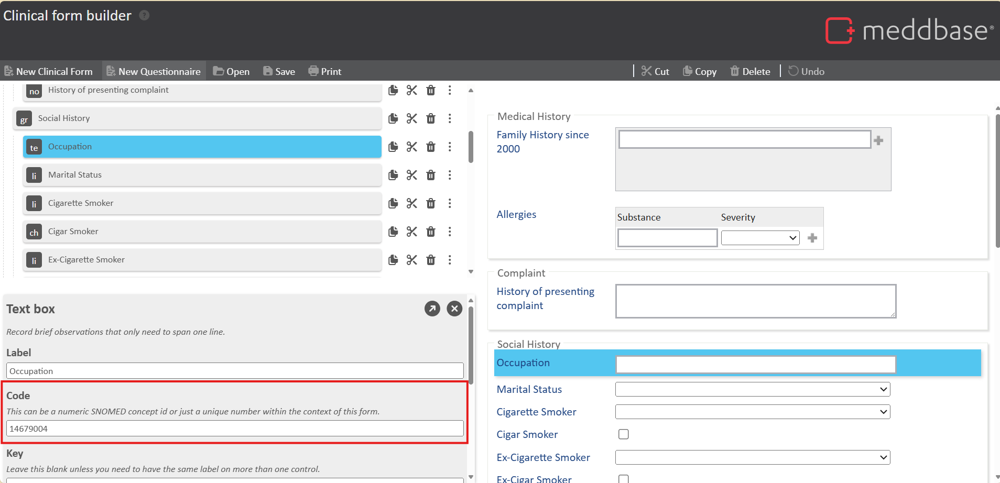
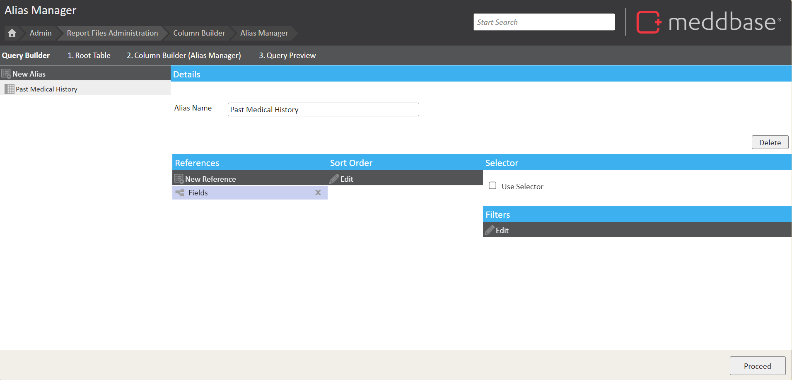
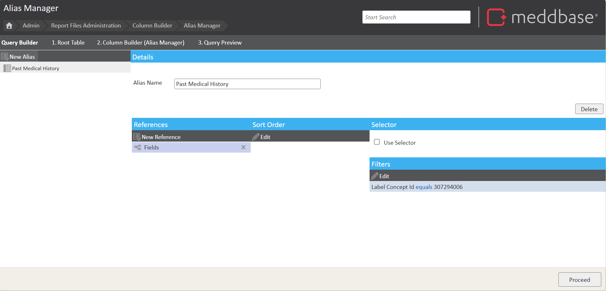
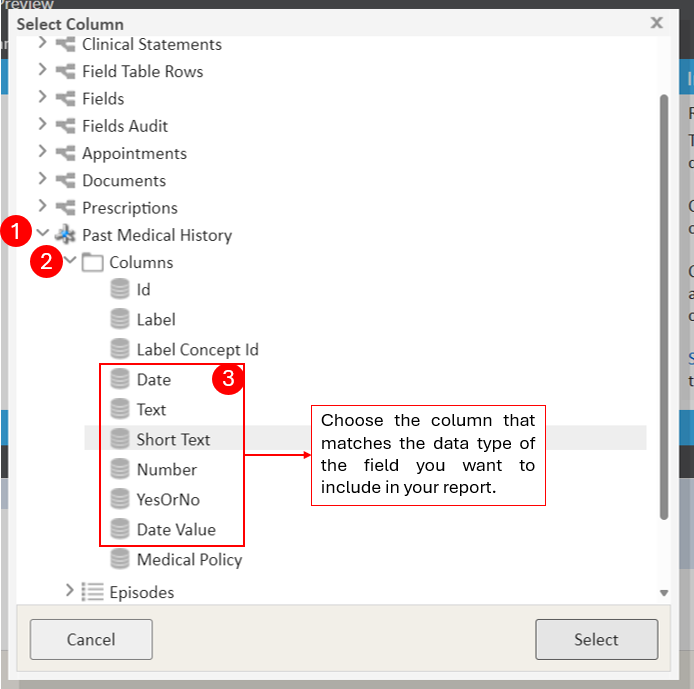
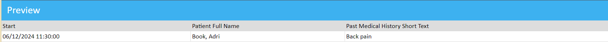
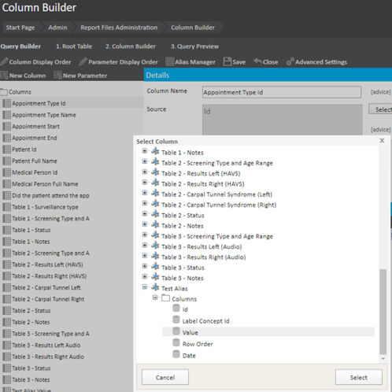
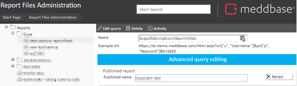

Clinical Forms are accessible during a consultation and are used to document findings related to that consultation. Specific Clinical Forms can be linked to appointment types, ensuring that when an appointment of a particular type is marked as "arrived," the corresponding Clinical Form automatically appears. Each clinical form consists of various fields that autosave the information entered directly into the patient's medical history.
These fields can include text boxes, numeric inputs, note logs for creating a historical record, radio buttons, drop-down lists, or date fields. The data captured in these fields is automatically stored and can be included in reports for further analysis.
This article will guide you through the process of building a report on Clinical Form(CF) fields.
This article will cover the following topics:
It is important to note that you will need an understanding of the Report Query Builder as a whole and how to use aliases. If you don't, please read this article before proceeding Report Query Builder - Reporting on meta fields using the Alias Manager.
Every question in a Clinical Form will have an associated Concept ID, also known as the code. These codes are unique to what you have defined them to be. This is the identifier for this question. You will need to know the Concept ID of the CF fields you want to include in your report. An example of what a Concept ID looks like can be seen in the screenshot below, this is a snippet taken from the Form Builder.

Please contact support if you do not have the concept IDs of the CF fields you would like to report on.
When generating a report, you can choose between two root tables: Appointments and Episodes.
Appointments Root Table:
Episodes Root Table:
Use the Appointments Root Table if:
Use the Episodes Root Table if:
Once you have selected your root table and proceeded to the Report Query Builder, the next step is to add the base columns for your report, such as essential patient details and relevant clinical form fields.
In this example, we will use the Episodes Root Table.
To display data from a specific Clinical Form Field in a report, you need to create an alias. This alias should reference the Fields table, which contains all the data for Clinical Form Fields. This alias will have a filter using the Concept ID of the specific field you want to view. This ensures the report only shows data related to that particular Clinical Form Field.
You will need to do this for each clinical form field you wish to see in your report.
To create the alias you will need to:
In the example below, an Alias has been created and named"Past Medical History" and the alias references the Fields table.

Now you need to add a filter to this Alias, this is where you will specify the Concept ID of the field you would like to report on. To do this:
In the example below, the "Past Medical History" alias references the Fields table and includes a filter on the Label Concept ID, which in this case is 307294006.

By applying this filter, the report retrieves only the data from the Fields table where the Concept ID matches 307294006. This ensures that the report displays data exclusively for the "Past Medical History" Clinical Form Field.
If you are using the Appointments Root Table, your Alias needs to reference Episodes > Fields. The same instructions for adding a filter on the Label Concept ID apply.
You will now need to add a column from your Alias to the report. Depending on the type of data held in the field, you will need to select the data type for that field.

| Column Name/Data Type | Purpose/Clinical form field type |
|---|---|
| Date | The date the field was populated. |
| Text | Notes. |
| Short Text | Text box, List box, Notes with History, Radio buttons. |
| Number | Numerical values. |
| YesOrNo | Check boxes. |
| Date Value | Historical date, future date. |
Adding the field to your report:
Now this column has been added to your report, click next to see a preview. Your report may look something like the screenshot below.

This process would then be repeated for each clinical form field you wish to see in your report.
Reporting on clinical form fields that are stored within a table such as drop downs, requires Advanced query editing in order to pull the data into the report.
Like reporting on all clinical form fields, you will first need to create a new alias. The difference this time is that you need to use reference of Field Table Rows. No filters are needed. This is instead of Fields > Label Concept Id which is used for clinical form fields not stored in a table.
Once you have created this alias, you will need to add the alias in as a column to your report, referencing the ‘Value’ column.

You can now save your report then you will need to open Advance Query Editing for the XML report query.

Below is what the specific line of XML code will look like if you have successfully created your alias and added the Column for the Alias’ value to your report.
<Column name="Test Alias Value" source="@Tables.Test Alias.Value"> <First /> </Column>
You will then need to add in the red lines of code to reference the Label Concept Id and to aggregate the data. Replace 'conceptID' with the concept ID number for the table field you want to see.
<Column name="Test Alias Value" source="@Tables.Test Alias.Value">
<Combine separator="," />
<Format>
<Query>$[?(@.LabelCode == 'conceptID')].Display</Query>
</Format>
</Column>
Click anywhere out of the advanced query editor to save your changes.
Go back into your report and you will see the new column added and when previewing your report, you will see data from that field from a table.